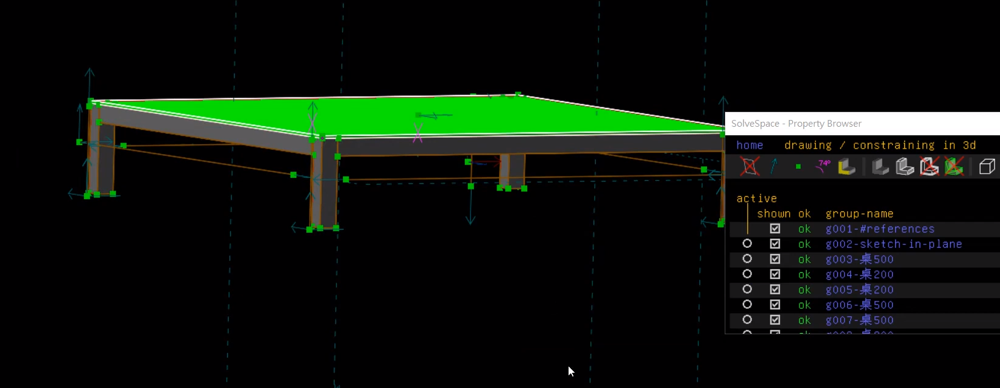
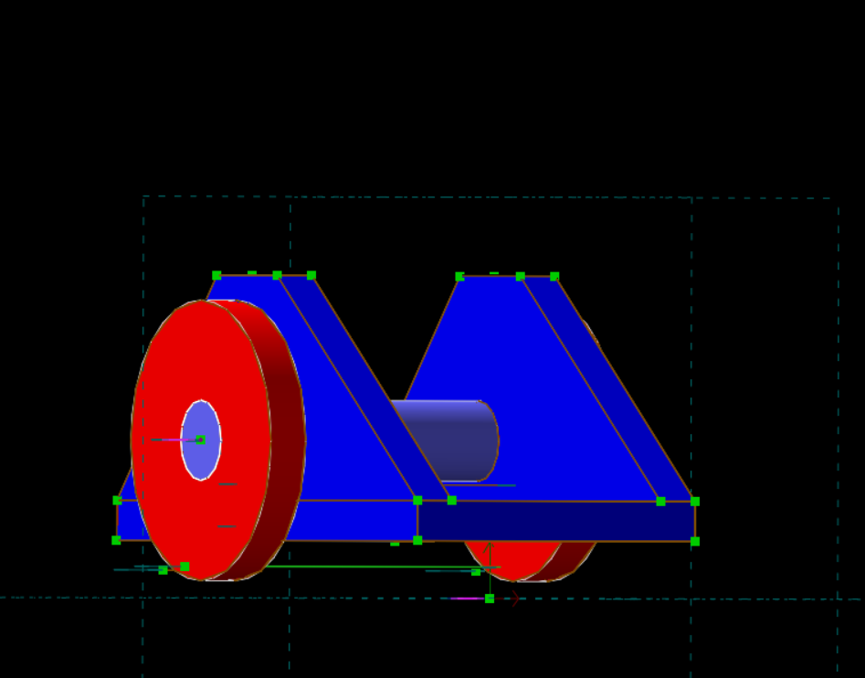
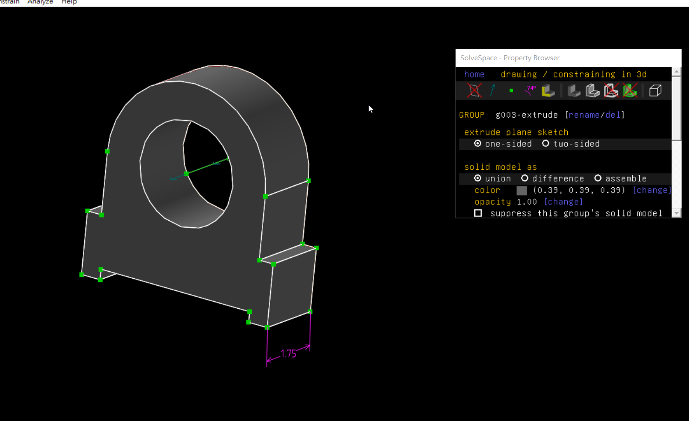
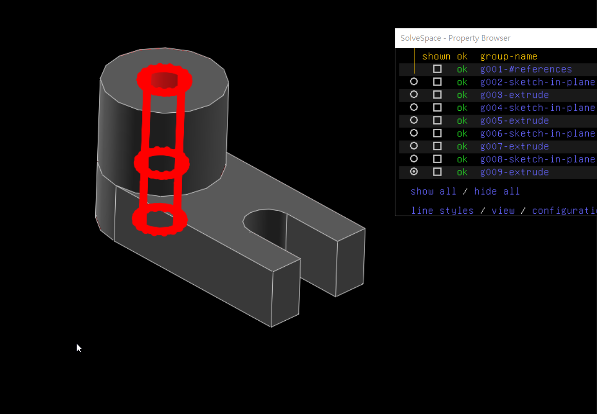

Next >> Week1~2
Week2-9
Week1
中秋節連假
Week2
創建github倉儲並且練習github指令
1. 創立並且加入課程倉儲名稱為Cad2019 , 然後勾選lnitialize this repository with a README
2. git clone到近端上(至mde.tw中下載2019fall可攜套件)
3. 使用git submodule add之指令建立目錄並取下子模組
4. 當要開啟近端時必須要先進入cmsimde才能夠打上python wsgi.py指令
影片 :
Week3
1.先將Y:\portablegit\bin\sh.exe 改名為 sh_rename_for_solvespace.exe
2. 打指令git clone --recurse-submodules
3.到untitle編輯cmakelist內之713及714行(加入#字號)
4.進入資料夾cd solvespace>cd extlib>cd libpng>mkdir build>cd build
5.執行cmake .. -G "MinGW Makefiles" -DCMAKE_BUILD_TYPE=Release
mingw32-make
6.找到檔案 libpng.dll.a 更名, 更名名為 libpng_static.a
7.回到 solvespace 目錄,建立 build 目錄後進入 build 資料夾
8.在執行指令cmake .. -G "MinGW Makefiles" -DCMAKE_BUILD_TYPE=Release
mingw32-make
Week4
練習+趕前面進度
week5
solvespace 練習
1.運用左方工具列製作一個形狀並擠出 , 在儲存
2.在開啟多個剛剛製作的物件
3. 運用左側工具列設定方向
4. 按O讓兩點相連接
5. 成品
快速鍵
sketch rectangle (R)
sketch line segment(S)
sketch circle (C)
constrain distance (D)
constrain angle (N)
nearest isometric view (F3)
align view to workplane(W)
equal length/radius/angle (Q)
成品圖

Week6
1.下載V-REP3、web_vrep2
2.畫一台兩輪車
3.操作vrep的兩輪車

Week7
1.圖8

影片
2.圖3

影片
Week8
開啟部落格
week9
期中集大成
Next >> Week1~2